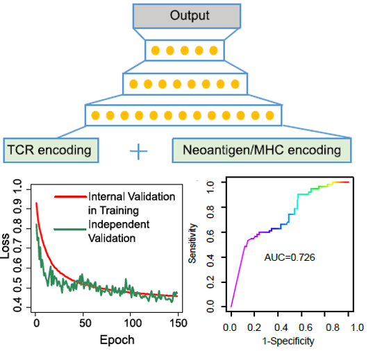

RESEARCH PROJECTS
-
Profiling Antigen Binding Affinity of B Cell Repertoires in Tumors by Deep Learning
The capability to profile the landscape of antigen-binding affinities of a vast number of antibodies (B cell receptors, BCRs) will provide a powerful tool to reveal biological insights. However, experimental approaches for detecting antibody-antigen interactions are costly and time-consuming, and can only achieve low-to-mid throughput. In this work, we developed Cmai to address the prediction of binding between antibodies and antigens that can be scaled to high-throughput sequencing data. We devised a biomarker based on the output from Cmai to map the antigen-binding affinities of BCR repertoires. We found that the abundance of tumor antigen-targeting antibodies is predictive of immune-checkpoint inhibitor (ICI) treatment response. We also found that, during immune-related adverse events (irAEs) caused by ICI, humoral immunity is preferentially responsive to intracellular antigens from the organs affected by the irAEs. We used Cmai to construct a BCR-based irAE risk score, which predicted the timing of the occurrence of irAEs.
-

Mapping Cellular Interactions from Spatially Resolved Transcriptomics Data
Cell-cell communication (CCC) is essential to how life forms and functions. However, accurate, high-throughput mapping of how expression of all genes in one cell affects expression of all genes in another cell is made possible only recently through the introduction of spatially resolved transcriptomics technologies (SRTs), especially those that achieve single cell resolution. Nevertheless, significant challenges remain to analyze such highly complex data properly. Here, we introduce a Bayesian multi-instance learning framework, Spacia, to detect CCCs from data generated by SRTs, by uniquely exploiting their spatial modality. We highlight Spacia’s power to overcome fundamental limitations of popular analytical tools for inference of CCCs, including losing single-cell resolution, limited to ligand-receptor relationships and prior interaction databases, high false positive rates, and most importantly, the lack of consideration of the multiple-sender-to-one-receiver paradigm. We evaluated the fitness of Spacia for all three commercialized single cell resolution ST technologies: MERSCOPE/Vizgen, CosMx/Nanostring, and Xenium/10X. Overall, Spacia represents a notable step in advancing quantitative theories of cellular communications.
-
Comparative Analysis of Dimension Reduction Methods for Cytometry by Time-of-Flight Data
While experimental and informatic techniques around single cell sequencing (scRNA-seq) are advanced, research around mass cytometry (CyTOF) data analysis has severely lagged behind. CyTOF data are dramatically different from scRNA-seq data in many aspects. This calls for the evaluation and development of computational methods specific for CyTOF data. Dimension reduction (DR) is one of the critical steps of single cell data analysis. Here, we benchmarked the performances of 21 DR methods on 110 real and 425 synthetic CyTOF samples. We found that less well-known methods like SAUCIE, SQuaD-MDS, and scvis are the overall best performers. In particular, while SAUCIE and scvis are well balanced, SQuaD-MDS excels at structure preservation whereas UMAP has great downstream analysis performance. We also found that t-SNE (along with SQuad-MDS/t-SNE Hybrid) possesses the best local structure preservation. Nevertheless, there is a high level of complementarity between these tools, so the choice of method should depend on the underlying data structure and the analytical needs.
-
Inferring the evolution of neoantigen-T cell interactions in tumors
Neoantigens are the key targets of anti-tumor immune responses from cytotoxic T cells, and play a critical role in affecting tumor progressions and immunotherapy treatment responses. However, still little is known about how the interaction between neoantigens and T cells ultimately impacts the evolution of cancerous masses. Here, we develop a hierarchical Bayesian model, named Neoantigen-T cell Interaction Estimation (netie) to infer the history of neoantigen-CD8+ T cell interactions in tumors. We showed that tumors with an increase in immune selection pressure over time, inferred from the distribution of neoantigens, demonstrate an expression signature of activation of T cells. We also discovered exhaustion of T cell cytotoxic activity post receiving immunotherapy treatment in the tumor clones that newly arise after treatment. Overall, we provide a new tool that is capable of revealing the imprints left by neoantigens during each tumor’s developmental process, and of predicting how tumors will progress under further pressure of the host’s immune system.
-

Sprod for De-noising Spatial Transcriptomics Data Based on Position and Image Information
In this work, we demonstrated the extensive levels of noise in ST data. We developed a mathematical model, named Sprod, to impute accurate ST gene expression based on latent space and graph learning of matched location and imaging data. We comprehensively validated Sprod and demonstrated its advantages over prior methods for removing drop-outs in scRNA-seq data. We further showed that, after adequate imputation by Sprod, differential expression analyses, pseudotime analyses, and cell-to-cell interaction inferences yield significantly more informative results. Overall, we envision denoising by Sprod to become a key first step to empower ST technologies for biomedical discoveries and innovations.
-
Benisse for Interpreting the B Cell Receptor Repertoire with Single Cell Gene Expression. Nature Machine Intelligence
In this study, we investigated 43,938 B cells from 13 scRNA-seq datasets with matched scBCR-sequencing, and we observed an association between the BCRs and the B cells’ transcriptomics. Motivated by this, we developed the Benisse model (BCR embedding graphical network informed by scRNA-Seq) to provide refined analyses of BCRs guided by single cell gene expression. Benisse revealed a gradient of B cell activation along BCR trajectories. We discovered a stronger coupling between BCRs and B cell gene expression during COVID-19 infections. We found that BCRs form a directed pattern of continuous and linear evolution to achieve the highest antigen targeting efficiency, compared with the convergent evolution pattern of T cell receptors (TCRs).
-
T-B reciprocity enhances B cell epitope prediction
The ability to predict B cell epitopes from antigen sequences is critical for biomedical research and many clinical applications. Despite substantial efforts over the past 20 years, the performance of B cell epitope prediction algorithms is still modest. Investigators have observed the phenomenon of T-B reciprocity, in which candidate B cell epitopes with nearby CD4+ T-cell epitopes have higher chances of being immunogenic. We developed a linear B cell epitope prediction model, BepiTBR, based on T-B reciprocity, and performed comprehensive validations. We showed that explicitly including the enrichment of putative CD4+ T-cell epitopes (predicted HLA class II epitopes) in the model leads to significant enhancement in the prediction of linear B cell epitopes.
-

Deep learning-based prediction of the T cell receptor-antigen binding specificity
We built a transfer learning-based model, named pMHC-TCR binding prediction network (pMTnet), to predict TCR-binding specificities of neoantigens, and antigens in general, presented by class I major histocompatibility complexes (pMHCs). pMTnet was comprehensively validated by a series of analyses, and showed advance over previous work by a large margin. Predicting TCR-neoantigen/antigen pairs is one of the most daunting challenges in modern immunology. However, we achieved an accurate prediction of the pairing only using the TCR sequence (CDR3β), antigen sequence, and class I MHC allele, and our work revealed unique insights into the interactions of TCRs and pMHCs in human tumors using pMTnet as a discovery tool.
-
DisHet: A Bayesian Hierarchical model for dissecting the cellular heterogeneity of bulk tumor RNA-seq data reveals kidney cancer-specific immune signatures
We developed a Bayes Hierarchical model, DisHet, for dissection of heterogeneous bulk tumors, to evaluate the tumor microenvironment in renal cell carcinoma (RCC). DisHet was used to separate the normal, tumor, and immune/stromal components from RNA-sequencing (RNA-seq) data. DisHet analyses uncovered 610 genes not previously linked to the RCC tumor microenvironment and showed that half of the previously designated immune signature genes are not expressed in the RCC tumor microenvironment. These RCC-specific immune signature genes defined by DisHet analyses were termed eTME. Together with data from The Cancer Genome Atlas, the DisHet and eTME analyses characterized a highly-inflamed RCC subtype (termed IS) that exhibited enrichment of regulatory T cells, natural killer cells, Th1 cells, neutrophils, macrophages, B cells, and CD8+ T cells. The IS subtype was associated with aggressive disease, including BAP1-deficient clear-cell RCC and type 2 papillary tumors, and predicted poor survival in patients with RCC. These findings provide a missing link between tumor cells, the tumor microenvironment, and systemic factors.
-
SCINA: A Semi-supervised category identification and assignment model
We developed SCINA, a semi-supervised cell type assignment tool for single cell RNA-Seq and CyTOF/FACs data. One feature that distinguishes SCINA from previously used approaches is the consideration of prior knowledge as a form of supervision. The prior knowledge is denoted by a list of signature genes for each type of cell. SCINA searches for a segregation of the pool of profiled cells such that each type of assigned cells highly expresses the signature genes specified by the researcher. The subset of cells that do not highly express any of the signature genes will be designated as cells of unknown type. SCINA is also general and can be applied on other data of similar format, such as patient bulk RNA-Seq data. In our validation datasets, SCINA demonstrated superior performance to unsupervised approaches such as t-SNE and K-means clustering. Overall, SCINA, representing a “signature-to-category” approach, addresses a critical research need that has been previously neglected. Nevertheless, it is also synergistic with traditional unsupervised “category-to-signature” approaches.
-
Mapping the Functional Landscape of T Cell Receptor Repertoire by Single T Cell Transcriptomics
Many experimental and bioinformatics approaches have been developed to characterize the T cell receptor (TCR) repertoire. However, the unknown functional relevance of TCR profiling significantly hinders and potentially misleads interpretation of the roles of T cells played in various biological processes. To address this inadequacy, we developed tessa (TCR functional landscape estimation supervised with scRNA-Seq analysis) to integrate TCRs with the phenotypes of T cells, in order to estimate the effect that TCRs confer upon the phenotypes of T cells. Tessa leveraged the recently developed single cell RNA-sequencing techniques that are multiplexed with TCR-sequencing, which provide both types of data concurrently for each T cell. We systematically validated tessa and showed its superiority over existing approaches that only investigate the TCR sequences. By applying tessa on a series of single T cell sequencing datasets, we demonstrated that TCR similarity constrains the phenotypes of T cells to be similar, and dictates a gradient in antigen targeting efficiency of T cell clonotypes with convergent TCRs. We showed this constraint could predict a functional dichotomization of T cells post-immunotherapy treatment, and is weakened in tumor contexts. Overall, tessa allows us to map the functional landscape of TCR repertoire in a probabilistic manner, and to generate impactful insights on both research and translational applications involving T cells.
-
Overcoming Expressional Drop-outs in Lineage Reconstruction from Single-Cell RNA-Sequencing Data
Single-cell lineage tracing provides crucial insights into the fates of individual cells. Single-cell RNA sequencing (scRNA-seq) is commonly applied in modern biomedical research, but genetics-based lineage tracing for scRNA-seq data is still unexplored. Variant calling from scRNA-seq data uniquely suffers from “expressional drop-outs,” including low expression and allelic bias in gene expression, which presents significant obstacles for lineage reconstruction. We introduce SClineager, which infers accurate evolutionary lineages from scRNA-seq data by borrowing information from related cells to overcome expressional drop-outs. We systematically validate SClineager and show that genetics-based lineage tracing is applicable for single-cell-sequencing studies of both tumor and non-tumor tissues using SClineager. Overall, our work provides a powerful tool that can be applied to scRNA-seq data to decipher the lineage histories of cells and that could address a missing opportunity to reveal valuable information from the large amounts of existing scRNA-seq data.
-
Tumor Neoantigenicity Assessment with CSiN Score Incorporates Clonality and Immunogenicity to Predict Immunotherapy Outcomes
Lack of responsiveness to checkpoint inhibitors is a central problem in the modern era of cancer immunotherapy. Tumor neoantigens are critical mediators of immunotherapy treatment efficacy. Current studies of neoantigens almost entirely focus on total neoantigen load, which has been linked with treatment response and prognosis only in some studies, but not others. We developed state-of-the-art bioinformatics pipelines to detect neoantigens from patient tumors with a high level of sensitivity. Then we developed a novel modeling strategy, CSiN, of the neoantigen data profiled by our pipelines to characterize the degree of concentration of immunogenic neoantigens in truncal mutations, based on a derivation of the Cauchy-Schwarz inequality. By exploiting the clinical responses in 501 immunotherapy-treated patients and the overall survival of 1,978 patients, we showed that CSiN scores predict treatment response to checkpoint inhibitors and prognosis.